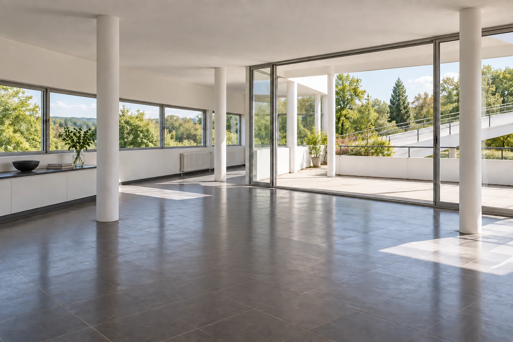
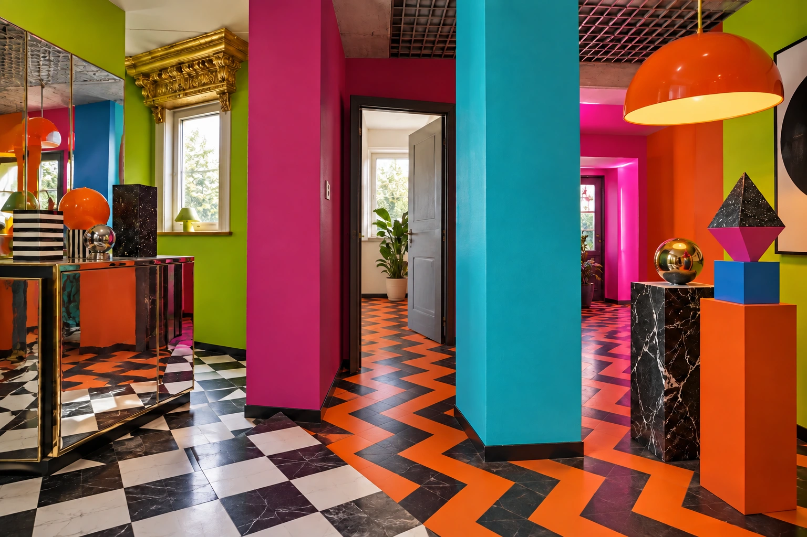
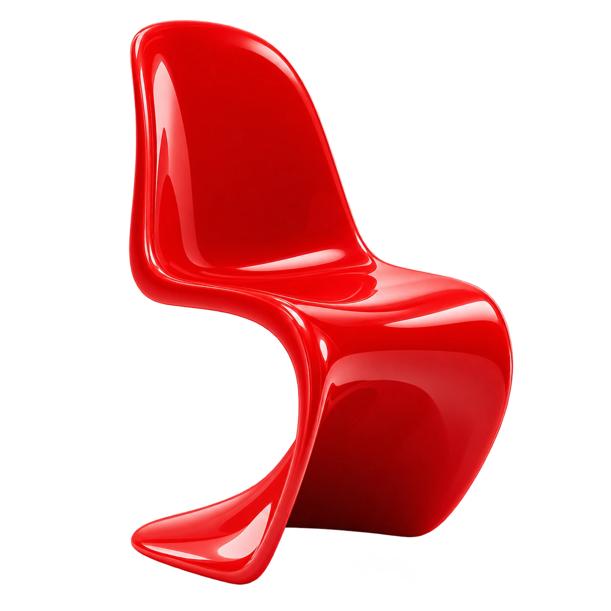
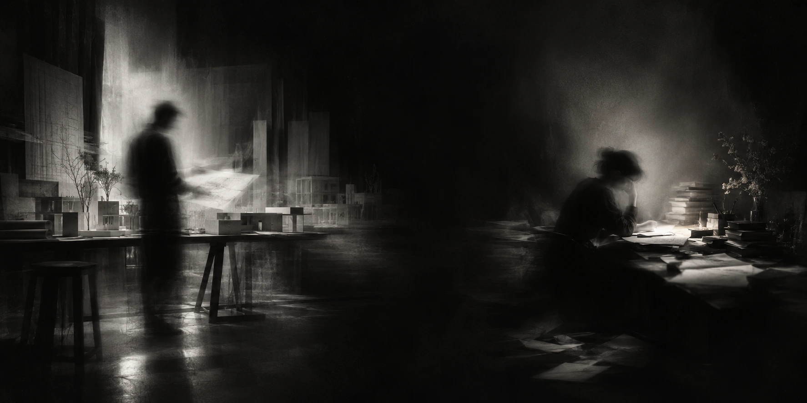
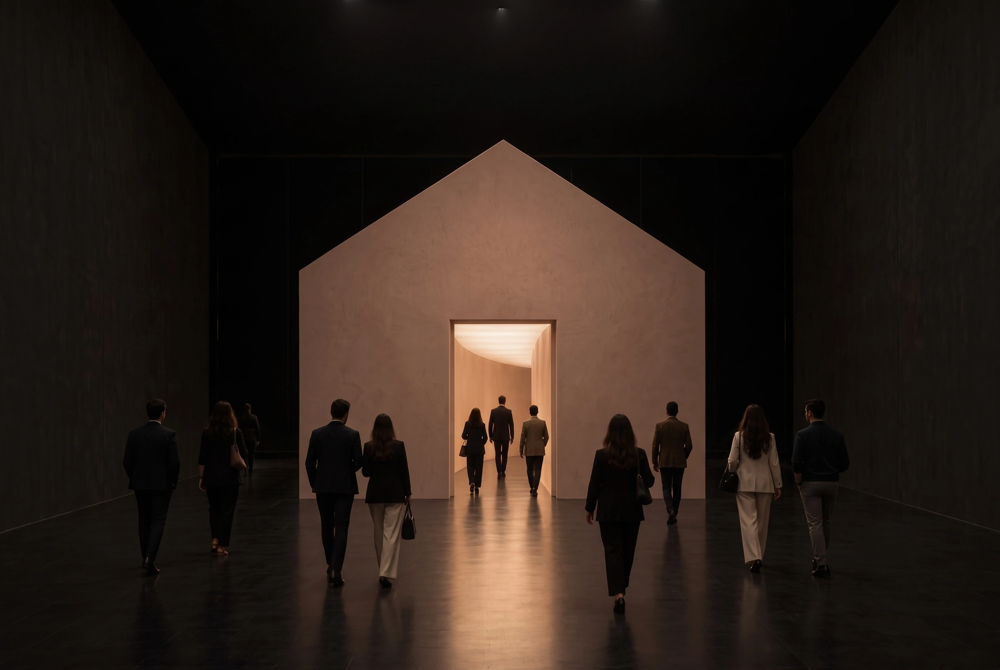

رابطه، معنا میسازد.نثر / ۰۱
یک واژه؛ امکانهای بسیار+
هر واژه، جهانی مستقل.
معنا از یک واژه آغاز میشود؛ اما در آن تمام نمیشود.
بافتِ صندلیبکش و مقایسه کن



یک شیء / فرم، رنگ، کاربردOBJECT — CONTEXT — NARRATIVEیک صندلی. یک شخصیت.
فرم، رنگ و کارکرد؛ پیش از آنکه فضایی پیرامونش شکل بگیرد.

با واژهها
نویسنده
WRITERواژه را برمیگزیند.
رابطه میسازد.
روایت میآفریند.
با فضاها
معمار
ARCHITECTعناصر را برمیگزیند.
رابطه میسازد.
روایت میآفریند.
آفرینش، هنرِ رابطههاست.
یکی با واژهها مینویسد؛ دیگری با فضا.
ELITEاِلیتبهعنوان معمار الیت،
بهعنوان معمار الیت،
چه روایتی را باید بیان کنم؟
تا محصولات و برندها در جایگاه درست قرار بگیرند.
×
روایت شخصی
روایتی از من؛ نه لزوماً دغدغهٔ مشترک ما.
خانهٔ امروز
با خاطرات شکل میگیرد
یا با رویا؟
۰۱ / گذشته
بازگشت به خاطره
هویت، تجربه و آنچه به ارث بردهایم.
۰۲ / آینده
حرکت بهسوی رؤیا
امکان، تخیل و آنچه هنوز نساختهایم.
در دوران پسامدرن امروز، برای خلق فضا
باید به سراغ گذشته رفت یا به سراغ آینده؟
